User guide
This chapter is the fuller tutorial for Vallotton: what each screen is for, and how the library, reflection, continuous generation and the rest work. If you have not used Vallotton yet, read the quick start first and come back once your first picture is painted. The sections are mostly independent, so read only the ones you need.
The main screen
The main screen is where you paint day to day, and it works much like ChatGPT and other AI chat apps. Open any conversation in Vallotton and you are on it: the window is split into a left bar, a middle and a right bar, with the composer at the bottom.
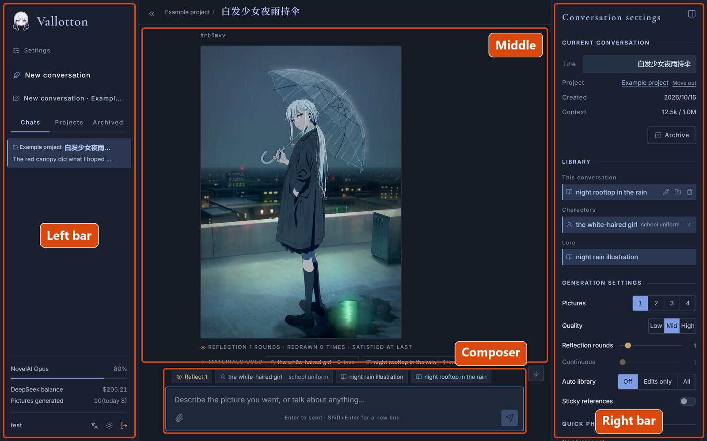
| Where | What it is for |
|---|---|
| Left bar | At the top are the “Settings” link and the “New conversation” button. Under them are three tabs, three ways of looking at your conversations: “Chats” lists every conversation by date; “Projects” lists them by project, see projects; “Archived” lists the ones you have put away. At the bottom of the left bar are the NovelAI and DeepSeek balances, the number of pictures painted so far and the like, then the username and three buttons: switch the language, switch the theme, log out. |
| Middle | The conversation itself: what you said, Vallotton's replies, the pictures it painted. |
| Right bar | The settings of the current conversation: its title, the library entries it can use, the generation settings, the quick phrases, see the right bar. The button at the top right collapses or opens it. |
| Composer | Type what you want painted here. Enter sends, Shift+Enter starts a new line. The paperclip button at the bottom left adds reference pictures. The row of chips above the composer shows the library entries and the generation settings this conversation is using. |
Finished pictures
A finished picture appears inside Vallotton's reply. Above it is a line starting with #: the picture's id. Use it to point at a particular picture, for example “make the umbrella in #v898fc red”.
A message can ask for a new picture or for a change to one already painted; Vallotton works out which from what you say. If you give no id, the change goes to the most recent picture. A changed picture shows “Edited from” and the original's id after its own.
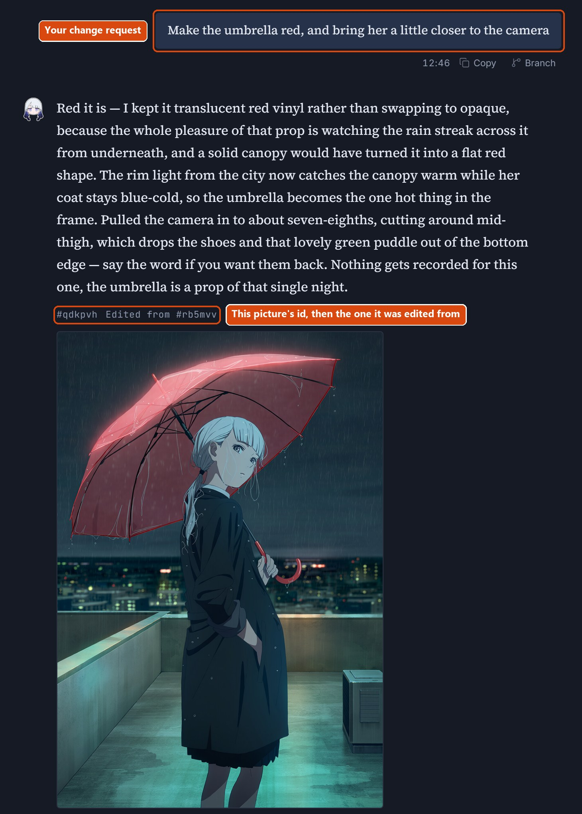
Under each picture, in order:
- The reflection result: only there when reflection is on; it says how many rounds were reflected on and how many times the picture was redrawn, see reflection.
- Materials used: which library entries went into this picture; open it to see exactly which lines, see the library.
- NovelAI prompts: the prompts sent to NovelAI. Folded by default; open it to read them, and the button beside it copies them.
- The time it took, and a few buttons. What the buttons do is in the table below.
| Button | What it does |
|---|---|
| Redraw | Paints again with the same prompts, changing only the random result. For when the composition is right and you want the details to try their luck once more. |
| Copy | Copies the text of this reply. |
| Branch | Copies a new conversation off from this message. The new conversation holds this message and everything before it, nothing after it, and the library goes back to how it was at that point. For when you want to try another direction from a point you like without touching the original conversation. |
| Rerun | Generates this whole reply again; the old reply is replaced. Only the latest reply has this button. |
| Inspect | Shows every detail of this round, see the inspector. |
While a picture is being painted, the send button at the bottom right of the composer turns into a stop button; click it to stop. If several pictures are being painted at once, there is also a “Stop and keep this picture” button: the pictures already finished stay, and the rest are not painted.
The lightbox and the main picture
Click a picture to open it large. In the lightbox you can step left and right through every picture in the conversation. The bar at the bottom says which picture this is, its size, the random seed and so on, with three buttons beside it: Set as main picture, Download the original, Add to references.
If you set “Pictures” in the generation settings to 2 to 4, each message paints several pictures, each a little different. In the lightbox you can then mark the one you like best with “Set as main picture”; the next time you ask Vallotton for a change, that is the one it changes. If you have not chosen, the first one is the main picture.
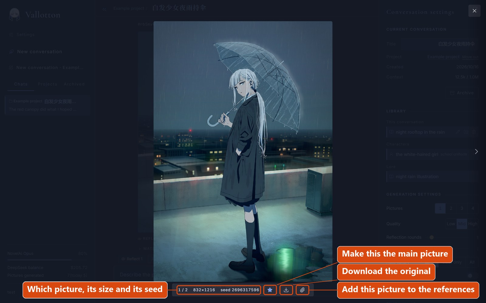
The composer and reference pictures
You can attach reference pictures to a message to show Vallotton the style, the character or the composition you have in mind: “paint in the style of this one”, “this is what she looks like”. To add one, click the paperclip button at the bottom left of the composer, or just drag the picture into the composer. A message takes up to 6 pictures, each at most 15 MB.
A finished picture can be a reference too: click “Add to references” in the lightbox and it lands in the composer. Bear in mind that Vallotton does not edit a reference picture directly; a reference is only something for it to look at.
By default a reference picture counts only for the message it is attached to. If you want earlier references to stay in force, turn on “Sticky references” in the generation settings in the right bar; from then on every message carries all the references attached so far, up to 6.
The row of chips above the composer shows the library entries this conversation is using now, and whether reflection, continuous generation, sticky references and so on are turned on. Rest the mouse on a chip to see what it holds; click it to open the right bar.
The right bar
The right bar holds the settings of the current conversation, in four blocks from top to bottom:
- Current conversation: the title (you can edit it in place), which project it belongs to, when it was created, the context (its length) and so on.
- Library: every entry this conversation can use; click an entry to attach or detach it, see attaching and detaching.
- Generation settings: the settings this conversation paints with, see generation settings.
- Quick phrases: ready-made lines you use often, see continuous generation and quick phrases.
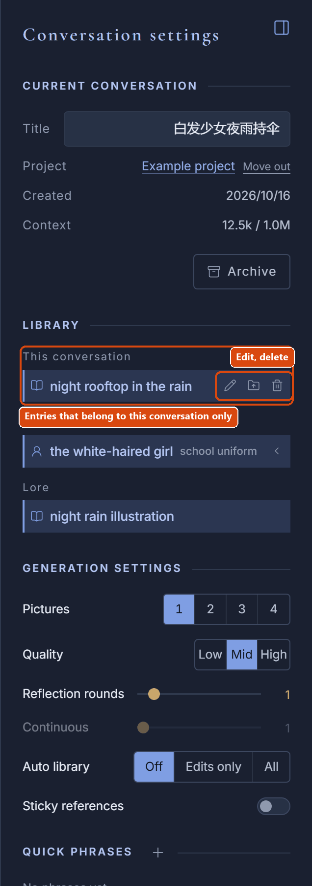
The library
The library is where Vallotton keeps what it knows about characters, clothes, styles and the like. Left to the model's own memory, the same character easily ends up looking different from one picture to the next, and the details of her clothes come and go. With the library, Vallotton paints the character from what is written down every time, so characters and style stay the same across many pictures, and you do not have to describe everything again each time.
Most of the time you need not look after the library yourself: a new character, a style you have settled on, Vallotton writes them down on its own, and if you say “give her a red sweater instead”, it updates the notes as it goes. You can of course edit the library yourself whenever you like.
Entries and tag lines
Each item in the library is an entry. There are three kinds:
- Lore entry
- A style, a scene that recurs, a rule that holds throughout the story (“it is always raining”), and so on.
- Character
- The parts of a character that do not change with her clothes: sex, hair, eyes, skin, whether she has a mole or a scar.
- Variant
- One of a character's outfits, with its accessories, pose and so on. A character can have several variants, and changing clothes does not change her face.
Every entry has two parts: a passage of notes and a number of tag lines. The notes are plain description and can hold things that cannot be painted, like personality or background. What actually decides how the picture turns out are the tag lines: each line describes one thing, say the hair, the eyes, the top, the shoes, in the English keywords NovelAI knows. For example:
Character “Ellie”
identity 1girl, black hair, short hair
eyes green eyes
mole mole under left eye
Variant “School uniform”
top white sailor shirt, navy sailor collar
bottom navy pleated skirt
shoes brown loafers
socks black knee socksWhen painting, Vallotton uses these tag lines whole and never rewrites them, so a character on record does not drift from picture to picture. The other way round, anything that is not written on some line may come out differently in every picture.
An entry can be changed at any time. Click the edit button beside it in the right bar to change its name and notes; if you change only the notes, Vallotton rewrites the tag lines from the new notes within a minute or two. Entries in a project can also have their tag lines edited directly on the project page. If you write tag lines yourself, a few suggestions:
- One thing per line: a line for the hair, one for the eyes, one for the top, one for the shoes.
- Spell out whatever affects the picture: colour, material, length, position. A mole should say whether it is under the left eye or the right.
- In a variant, write down every piece of clothing from head to toe, even if this picture only goes down to the knees. Anything left out may come out differently in every picture.
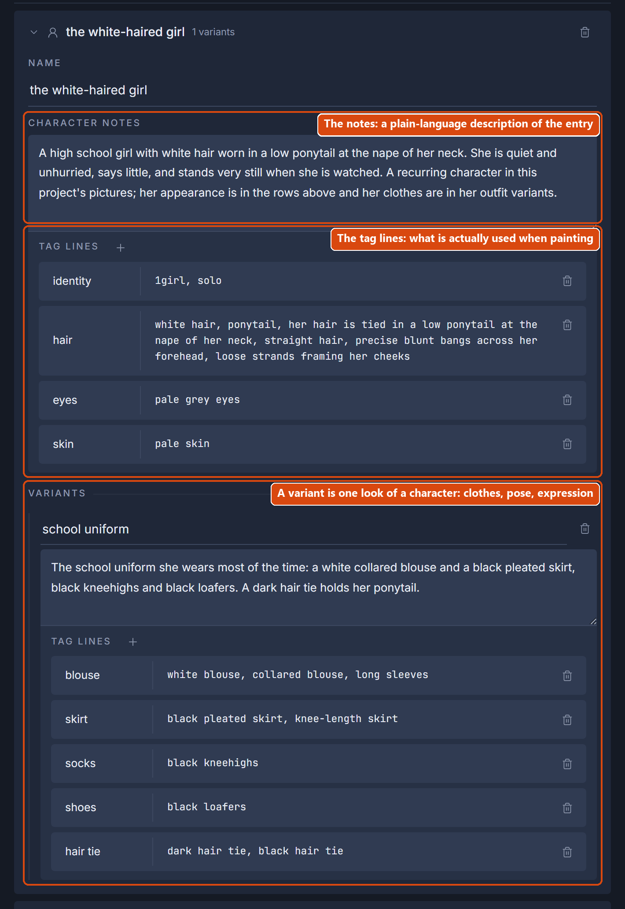
Attaching and detaching entries
A library entry has to be attached to the message before it is used in the pictures that follow. In the library in the right bar, click a lore entry to attach it to the current message or detach it; for a character, open it first and click one of its variants, which attaches that character in that variant (wearing that outfit, say). Attached entries show as chips above the composer.
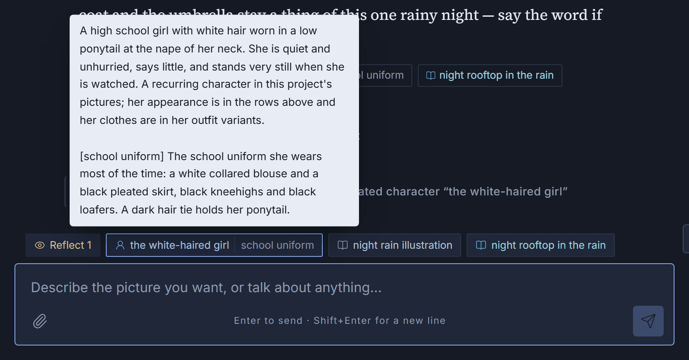
Projects
Once you have many conversations, projects keep them sorted. A project is like a folder: it holds conversations, and it can hold sub-projects.
The more important use of a project is a shared library. The library of the previous section belongs by default to the current conversation only; in another conversation everything would have to be remembered afresh. Every project has a library of its own, and the characters and lore in it can be used by every conversation in the project. If you are painting a serial story, say, make a project for it and put the main character into the project's library; every new conversation in that project can then paint the same main character.
The two layers of the library
So the library really has two layers: one belongs to the current conversation alone and is labelled “This conversation” on screen; the other belongs to the project, and every conversation in the project can use it.
- What Vallotton writes down in a conversation goes into the “This conversation” layer by default. In the row of chips above the composer, this conversation's entries are teal chips and the project's entries are dark grey chips.
- If you want the other conversations in the project to use an entry too, click the “Save to project” button beside it in the right bar, or just tell Vallotton to “save it to the project”. The conversation has to be in a project before Vallotton can edit the project's library.
- When Vallotton wants to write into the project layer, it asks first: a card appears in the conversation asking you to confirm. Only after you click “Write to the library” is anything written to the project library. If you would rather not confirm every time, change “Auto library” in the generation settings.
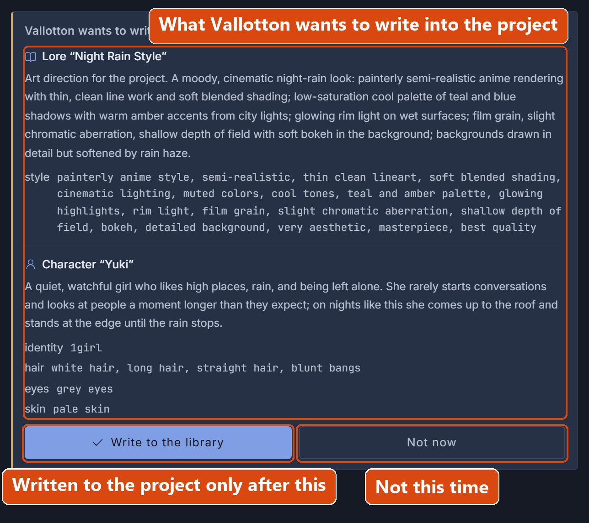
Projects are layered too: a conversation in a project inherits the library entries of all its ancestor projects. When the library is searched, the entries nearest the current conversation win. That is, this conversation's own entries come first; if the entry is not in this conversation, the parent project's library is searched, and only if it is not there either are the ancestor projects' libraries searched.
The project page
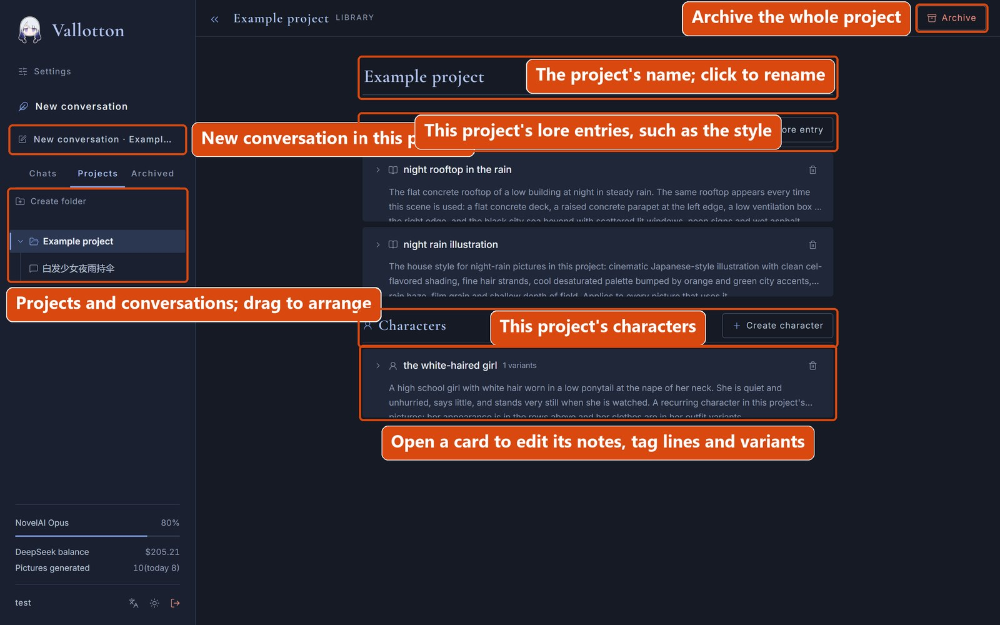
Switch the left bar to the “Projects” tab to see every project and the conversations in it. While you are looking at a project, or at a conversation in it, the “New conversation · project name” button in the left bar starts a new conversation in that project.
With a project selected, the middle of the window is no longer a conversation but the page for editing that project's library. The page has two columns, “Lore” and “Characters”. Here you can create entries, open the cards, change their contents, add variants to characters, delete entries and so on. If projects are nested, the entries of the outer projects show here too, but marked “Inherited”: they can be looked at, not changed.
The “Archive” button at the top right of the page puts away the whole project, conversations and sub-projects included. Archiving deletes nothing; it can all be found again at any time under the “Archived” tab in the left bar.
Generation settings
The generation settings are the parameters that govern painting. Every conversation has its own set, which you can see and change in the right bar. A new conversation starts with the defaults from the settings page.
| Setting | Range | What it does |
|---|---|---|
| Pictures | 1-4 | How many pictures each message paints. |
| Quality | Low, Mid, High | “Mid” paints a normal-size picture with NovelAI V5, using the subscription's V5 allowance. “High” paints a larger picture with V5, and each one costs extra points (Anlas) from the NovelAI account. “Low” uses the previous generation of model and does not touch the V5 allowance. Note that Mid and High differ only in resolution, while Low switches model and the results are far worse. Low is normally for when the V5 allowance is used up and there is nothing else for it. |
| Reflection rounds | 0-10 | How many rounds of reflection, at most, after each picture, see reflection. 0 means no reflection. |
| Continuous | 1-20 | How many pictures one message paints in a row, see continuous generation. 1 means no continuous generation. |
| Auto library | Off, Edits only, All | Whether Vallotton asks before changing the project library. “Off” means it asks every time; “Edits only” means it asks when creating an entry but not when changing an existing one; “All” means it never asks. |
| Sticky references | On, off | Whether reference pictures sent earlier stay in the context, see the composer and reference pictures. |
Reflection
With reflection on, after each picture is painted Vallotton looks it over itself and checks it against what you asked for: glasses that were asked for and not painted, a person missing, the perspective wrong, that sort of thing. If it finds something, it makes the change and paints again, until it is satisfied or the reflection rounds run out.
Reflection is on as soon as “Reflection rounds” in the generation settings in the right bar is 1 or more. While it works, the conversation shows the progress: “is studying this picture”, “is painting it again”. The repainted picture replaces the earlier one. If you stop generation during a repaint, the picture from before the repaint is the result.
Quick phrases
Quick phrases are ready-made lines you use often, such as a line that fixes the style: “paint this in the style of Japanese digital illustration”. You can create and edit quick phrases in the right bar or on the settings page. Click a quick phrase in the right bar and it is put into the composer for you.
Continuous generation
Continuous generation lets Vallotton paint a whole set of pictures in one go, several scenes of a story for instance. To use it:
- In the generation settings, set “Continuous” to the number of pictures you want.
- Select a quick phrase. The selected phrase is marked “Sent automatically during continuous generation”. Usually a transitional line does the job, such as “now paint the next scene”.
- Send the first message as usual.
When the first picture is finished, Vallotton sends that quick phrase for you, paints the next picture, and so on up to the number you set. This runs in the background and is not interrupted even if you close the browser; “In progress” on the settings page shows how many pictures are still to come. To stop partway, click the stop button in the composer.
The inspector
If you want to know how Vallotton worked inside during a given round, click the “Inspect” button under the message to open the inspector. It shows the complete internal record of that message.
There is a lot in it, and most of the time you will not need it. When what came out is not what you said, open it and see where the understanding went astray.
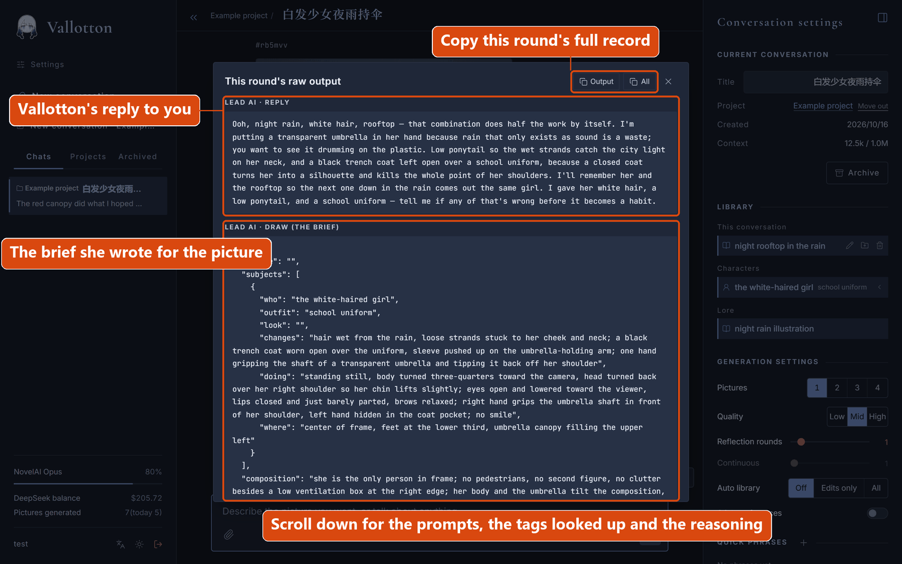
The settings page
Click “Settings” at the top of the left bar to open the settings page. Its first row switches the language and the theme; below that you set the defaults for the generation settings, manage the quick phrases and check the state of things in the background.
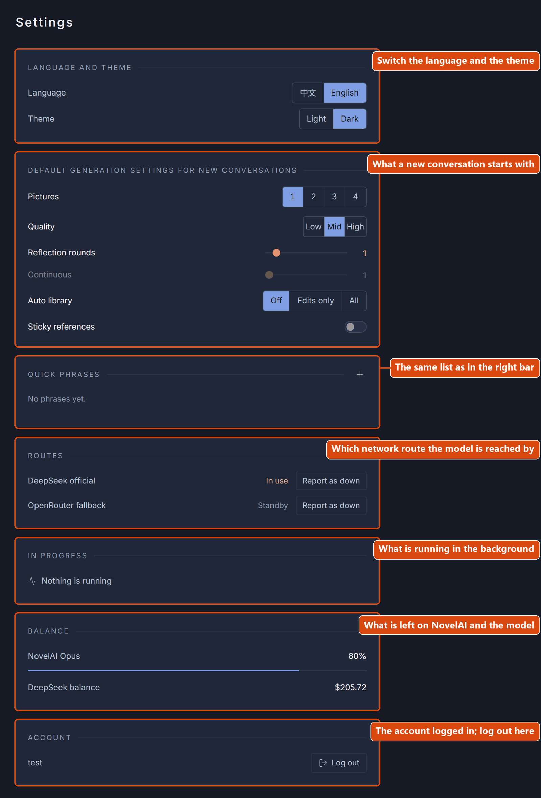
On a phone
Vallotton can be used as a phone app. Open Vallotton's address in the phone's browser and choose “Install and create shortcut” (the wording varies by browser; it may be “Add to Home screen”, “Install” or similar). An app icon then appears on the home screen, and from there it works like any other app.
The screen on a phone is much the same as on a computer. The button at the top left (or a swipe from left to right) opens the left bar; the button above the composer on the right opens the right bar. The left bar on a phone has no username row; the language and theme switches are on the first row of the settings page.
Bear in mind that a Vallotton running on your own computer as in the quick start can be opened only on that computer. To use it on a phone, it has to be put on a server as in deployment. (Unless you have some special magic that lets your phone reach a local service on your computer over the home network.)
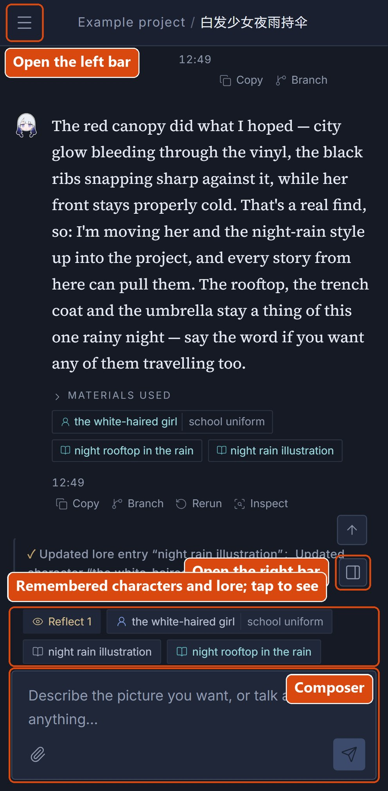
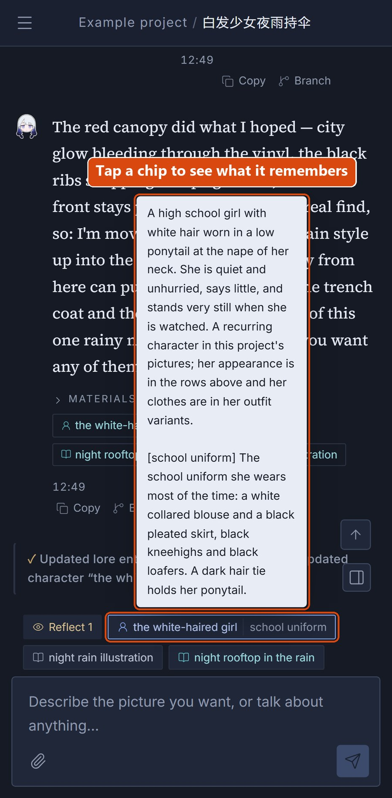
MCP
A Vallotton deployed on a server can open one more interface so that other programs can drive it (mainly meant for coding agents): send a line, fetch the finished picture, and so on. The interface uses a home-brewed, simplified protocol of its own, not the standard Model Context Protocol, so clients like Claude Desktop and Cursor cannot connect to it directly. How to set it up is in the MCP section of the deployment guide.